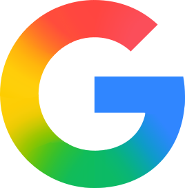
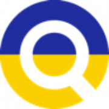

1Step 1
What are people actually asking?
 Claude Code · treg working
Claude Code · treg working>Seeds: small business CRM, CRM for small teams. Find what buyers actually ask, keep the ones close to a purchase. treg
treg.google.keywords.ideas ~40 related keywords

treg.google.keywords.volume volume · CPC · difficulty
dataforseo…search-intent-live ready to buy?treg.google.serp.organic People also ask
●Top question: "what's the best CRM for a small business?" Step est. ~$0.04 with treg
the tools this step pulls through treg
Keyword ideas
Keyword volume
Search intent DataForSEO
Google results
Step 1 prompt
═══ STEP 1 · What customers ask ═══ ~$0.04
1. `seranking.google.keywords.ideas` per seed (GET, source=cc, limit=40, sort=volume) → vol, CPC, difficulty. Merge, dedupe, drop off-topic rows (list them).
2. `dataforseo.x.dataforseo-labs-google-search-intent-live`, 1 call. I = transactional 1 | commercial 0.8 | informational 0.2 | navigational 0.
BuyerScore = I(0.50 C + 0.35 V + 0.15 E); C = minmax(CPC), V = minmax(log10(1+vol)), E = 1 − diff/100. Keep I ≥ 0.8.
3. Merge look-alikes (reordered/plural) into groups, score = max. Keep the top 8.
◆ G1: table keyword | intent | CPC→C→×.50 | vol→V→×.35 | diff→E→×.15 | score, + 5 best cut ✗ and why big ones were cut. keep | edit | weights | stop
4. `treg.google.serp.organic` per group → People Also Ask. Keep choose/compare/buy questions, merge same-meaning ones.
QuestionScore = max BuyerScore × (1 + 0.1(F−1)), F = groups sharing it. ≤10 questions. Rewrite as [situation] + [need] + "which should I buy?". No PAA → from keyword, tagged.
◆ G2: rank | question | source PAA | BuyerScore | F | score. approve | edit | swap | stop
What this step does, and why
What this step doesTurns two or three seed phrases into about forty related keywords with volume, cost per click and difficulty, labels each by search intent, keeps the ones close to a purchase, and pulls the full questions people type from “People also ask”.
Why it mattersPeople are not asking what you think they are. The questions nearest to buying are the ones worth winning in AI answers.
illustrative
Seed keywords
small business CRMCRM for small teams
Keyword ideas volume · ready to buy?
best crm for small businessready to buy
crm software for small teamsready to buy
simple crmready to buy
crm pricingready to buy
what is a crmresearch
crm vs spreadsheetresearch
What buyers ask People also ask
1What's the best CRM for a small business?
2Which CRM is easiest for a small team?
3Is a CRM worth it for 5 people?


 Claude
Claude